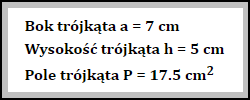

Instrukcja
Zadania znajdujące się na kolejnych stronach witryny rozwiązuj przy pomocy skryptów napisanych w języku JavaScript. Każde z rozwiązań znajduje się w oddzielnym skrypcie prawidłowo dołączonym w odpowiednim miejscu kodu strony. Wyniki zadania pojawiają w bloku mającym nadaną klasę "zadanie". Rozwiązanie zawiera opisane dane oraz wyniki zadania (jak na zrzucie poniżej).

Blok przeznaczony na rozwiązanie zadania.